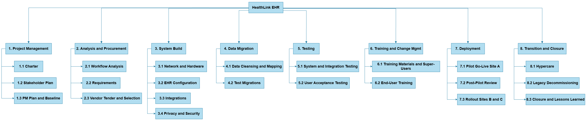

Project Overview, Charter & Scope
Why does the hospital network need this project, and what exactly will it deliver?
The problem
A regional hospital network with three sites runs four separate legacy systems for patient administration, pathology, pharmacy and paper notes. Clinicians can't see a patient's full record across sites, handovers rely on phone and paper, and two systems lose vendor support within 18 months.
Purpose: HealthLink EHR replaces these systems with one integrated electronic health record, available securely at all three sites.
Approach: a hybrid life cycle. Procurement, infrastructure, migration and rollout follow a predictive, baselined plan. EHR configuration and testing run in short iterations with clinicians, because clinical templates need repeated feedback. Rollout is phased: pilot at Site A, then Sites B and C.
SMART objectives
- Go live at all three sites within 11 months of charter approval.
- Migrate active patient records with at least 99.5% accuracy before go-live.
- Train at least 95% of staff before their site goes live.
- Cut cross-site record retrieval from about 20 minutes to under 2 minutes within 3 months of go-live.
- Deliver within the approved budget of $3.91M, which includes a 10% contingency.
Project charter summary
| Item | Summary |
|---|---|
| Sponsor | Network Chief Executive |
| Business owner | Chief Medical Information Officer (CMIO) |
| Project manager | Robin Hasan Roky |
| Milestones | M1 Planning baseline 8 May 2026 · M2 Vendor contract 17 Jul 2026 · M3 Go-live readiness 4 Dec 2026 · M4 All sites live 8 Jan 2027 · M5 Closed 26 Feb 2027 |
| Assumptions | A commercial EHR product is purchased; clinicians can be released 4 hours/week; patient identifiers can be matched across systems |
| Constraints | Hospitals run 24/7 so cutover can't interrupt care; fixed budget; privacy legislation; legacy vendor support ends in 18 months |
Scope
| In scope | Out of scope (exclusions) |
|---|---|
| Requirements, vendor selection, EHR configuration, integrations (pathology, radiology, pharmacy), network and hardware, data migration, privacy and security controls, testing, training, phased rollout, hypercare, legacy decommissioning | Patient mobile app, telehealth platform, billing/finance replacement, GP practice integration, medical device integration |
Work Breakdown Structure

Add screenshot: images/wbs.pngWhat this shows
8 phases and 22 work packages, each with a code (e.g. 3.2) used everywhere on this site.
How it connects
Each code becomes a ProjectLibre task (Schedule), a Trello card (Tracking) and a risk link (Risk).
Decision / implication
Any scope change must add or remove a WBS item through change control first. For example, CR-03 was rejected because it was an exclusion.
Site guide
| Page | What you'll find |
|---|---|
| Schedule & Cost | ProjectLibre Gantt, critical path, milestones, costs and resources |
| Risk & Stakeholders | Risk register, 5×5 heat map, stakeholder analysis, communication plan |
| Quality & Team | Quality metrics, change requests, team structure, RACI |
| Tracking | Trello board, earned value dashboard, issue log and corrective action |
| Recommendation | How the artefacts connect, closure, lessons learned and our recommendation |
| Evidence | Tool links, contribution table and references |